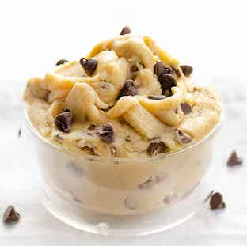

Cookie Dough

Description
This is a recipe for edible chocolate chip cookie dough.
Ingredients
- all-purpose flour
- granulated white sugar
- granulated brown sugar
- salted butter
- milk
- small chocolate chips
- vanilla extract
Steps
- Spread 1 cup of flour onto a baking sheet as a thin layer and bake at 300
degrees fahrenheit for approximately 8 minutes (until its internal
temperature is 160 degrees).
- Use an electric mixer to mix 1/2 cup of brown sugar, 1/4 cup of white sugar,
and 1/2 cup of butter together in a mixing bowl until well blended.
- Add 2 tablespoons of milk and 1/2 teaspoon of vanilla extract to the
mixing bowl and mix with the electric mixer until well blended.
- Add 1 cup of heat-treated flour to the mixture and mix with
electric mixer until well blended.
- Add 1/2 cup mini chocolate chips and mix with a spoon until well blended.